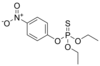

parathion

Definition: Parathion, also called parathion-ethyl or diethyl parathion and locally known as "Folidol", is an organophosphate insecticide and acaricide. It was originally developed by IG Farben in the 1940s. It is highly toxic to non-target organisms, including humans, so its use has been banned or restricted in most countries. The basic structure is shared by parathion methyl.
Source: Wikipedia
Wikipedia Page
Wikidata Page